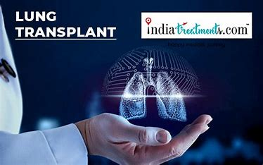
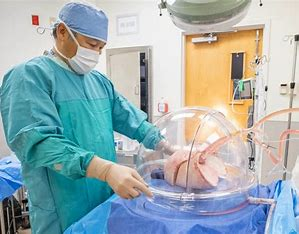
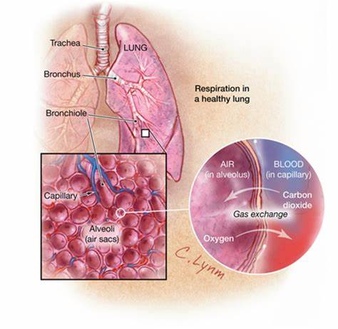

lungs transplatation
Lung transplantation, or pulmonary transplantation, is a surgical procedure in which one or both lungs are replaced by lungs from a donor. Donor lungs can be retrieved from a living or deceased donor. A living donor can only donate one lung lobe. With some lung diseases, a recipient may only need to receive a single lung. With other lung diseases such as cystic fibrosis, it is imperative that a recipient receive two lungs. While lung transplants carry certain associated risks, they can also extend life expectancy and enhance the quality of life for those with end stage pulmonary disease.[1]
Qualifying conditions
Lung transplantation is the therapeutic measure of last resort for patients with end-stage lung disease who have exhausted all other available treatments without improvement. A variety of conditions may make such surgery necessary. As of 2005, the most common reasons for lung transplantation in the United States were:[2]
27% chronic obstructive pulmonary disease (COPD), including emphysema;
16% idiopathic pulmonary fibrosis;
14% cystic fibrosis;
12% idiopathic (formerly known as "primary") pulmonary hypertension;
5% alpha 1-antitrypsin deficiency;
2% replacing previously transplanted lungs that have since failed;
24% other causes, including bronchiectasis and sarcoidosis.

External and Internal Features of Kidney
Contraindications
Despite the severity of a patient's respiratory condition, certain pre-existing conditions may make a person a poor candidate for lung transplantation:[3]
Concurrent chronic illness (e.g., congestive heart failure, kidney disease, liver disease)
Current infections, including HIV and hepatitis
However, more and more often, hepatitis C patients are both being transplanted and are also being used as donors if the recipient is hepatitis C positive. Similarly, select HIV-infected individuals have received lung transplants after being evaluated on a case-by-case basis.[4]
Current or recent cancer
Current use of alcohol, tobacco or illegal drugs
Age
Psychiatric conditions
History of noncompliance with medical instructions

History
Doctors at the Sklifosovsky Institute start a lung transplantation operation. The operation will last about 12 hours.
The history of organ transplants began with several attempts that were unsuccessful due to transplant rejection. Animal experimentation by various pioneers, including Vladimir Demikhov and Henry Metras,[5] during the 1940s and 1950s first demonstrated that the procedure was technically feasible. James Hardy of the University of Mississippi performed the first human lung transplant on June 11, 1963.[6][7][8] Following a single-lung transplantation, the patient, identified later as convicted murderer John Richard Russell,[9] survived for 18 days. From 1963 to 1978, multiple attempts at lung transplantation failed because of rejection and problems with anastomotic bronchial healing. It was only after the invention of the heart-lung machine, coupled with the development of immunosuppressive drugs such as ciclosporin, that organs such as the lungs could be transplanted with a reasonable chance of patient recovery.[citation needed]
The first successful transplant surgery involving the lungs was a heart-lung transplant, performed by Dr. Bruce Reitz of Stanford University in 1981 on a woman who had idiopathic pulmonary hypertension.[10][11]
1983: First successful long-term single lung transplant (Tom Hall) by Joel Cooper (Toronto)[12]
1986: First successful long-term double lung transplant (Ann Harrison) by Joel Cooper (Toronto)[13]
1988: First successful long-term double lung transplant for cystic fibrosis by Joel Cooper (Toronto).
In 1988, Vera Dwyer, a woman from County Sligo in Ireland, was diagnosed with an irreversible, chronic and fibrotic lung disease. Later on that year, she received a single lung transplant in the UK. In November 2018, Ms. Dwyer was recognized as the world's longest surviving single lung transplant recipient in an event at the Mater Hospital in Dublin.[14][15] She died in 2021, thirty-three years after her transplant.
Transplant requirements
Requirements for potential donors
There are certain requirements for potential lung donors, due to the needs of the potential recipient. In the case of living donors, this is also in consideration of how the surgery will affect the donor:[3]
Healthy
Size match
The donated lung or lungs must be large enough to adequately oxygenate the patient, but small enough to fit within the recipient's chest cavity
Age
Blood type

Requirements for potential recipients
While a transplant center is free to set its own criteria for transplant candidates, certain requirements are generally agreed upon:[3]
End-stage lung disease
Has exhausted other available therapies without success
No other chronic medical conditions (e.g., heart, kidney, liver)
Some patients with these diseases, if their condition can be made to improve to the point where they are stable enough to survive the operation, are granted an exception- many individuals with end-stage lung disease will have acute or chronic illnesses in other organs);
No current infections or recent cancer. Some patients, on a case by case basis, with lung cancer or other cancers, may be allowed. There are also certain cases where pre-existing infection is unavoidable, as with many patients with cystic fibrosis. In such cases, transplant centers, at their own discretion, may accept or reject patients with current infections of B. cepacia or MRSA
No HIV or hepatitis, although some recipients with the same type of hepatitis as the donor can receive a lung, and individuals with HIV who can be stabilized and can have a low HIV viral load may be eligible;
No alcohol, smoking, or drug abuse (some individuals who can cease these habits and comply with treatment may be given the chance)
Within an acceptable weight range (marked undernourishment or obesity are both associated with increased mortality)
Age (single vs. double tx)
Acceptable psychological profile
Has a social support system
Financially able to pay for expenses (where medical care is paid for directly by the patient)
Able to comply with post-transplant regimen. A lung transplant is a major operation, and following the transplant, the patient must be willing to adhere to a lifetime regimen of medications as well as continuing medical care.
Medical tests for potential transplant candidates
Patients who are being considered for placement on the organ transplant list undergo extensive medical tests to evaluate their overall health status and suitability for transplant surgery.[17]
Blood typing; the recipient's blood type must match the donor's, due to antigens that are present on donated lungs. A mismatch of blood type can lead to a strong response by the immune system and subsequent rejection of the transplanted organs
Tissue typing; ideally, the lung tissue would also match as closely as possible between the donor and the recipient, but the desire to find a highly compatible donor organ must be balanced against the patient's immediacy of need
Chest X-ray – PA & LAT, to verify the size of the lungs and the chest cavity
Pulmonary function tests
CT Scan (High Resolution Thoracic & Abdominal)
Bone mineral density scan
MUGA (Gated cardiac blood pool scan)
Cardiac stress test (Dobutamine/Thallium scan)
Ventilation/perfusion (V/Q) scan
Electrocardiogram
Cardiac catheterization
Echocardiogram
Lung allocation score

Main article: lung allocation score
Before 2005, donor lungs within the United States were allocated by the United Network for Organ Sharing on a first-come, first-served basis to patients on the transplant list. This was replaced by the current system, in which prospective lung recipients of age of 12 and older are assigned a lung allocation score or LAS, which takes into account various measures of the patient's health. The new system allocates donated lungs according to the immediacy of need rather than how long a patient has been on the transplant list. Patients who are under the age of 12 are still given priority based on how long they have been on the transplant waitlist. The length of time spent on the list is also the deciding factor when multiple patients have the same lung allocation score.[citation needed]
Patients who are accepted as good potential transplant candidates must carry a pager with them at all times in case a donor organ becomes available. These patients must also be prepared to move to their chosen transplant center at a moment's notice. Such patients may be encouraged to limit their travel within a certain geographical region in order to facilitate rapid transport to a transplant center.[citation needed]
Types of lung transplant
Lobe
A lobe transplant is a surgery in which part of a living or deceased donor's lung is removed and used to replace the recipient's diseased lung. In living donation, this procedure requires the donation of lobes from two different people, replacing a lung on each side of the recipient. Donors who have been properly screened should be able to maintain a normal quality of life despite the reduction in lung volume. In deceased lobar transplantation, one donor can provide both lobes.[citation needed]
Single-lung
Many patients can be helped by the transplantation of a single healthy lung. The donated lung typically comes from a donor who has been pronounced brain-dead.[citation needed]
Double-lung
Certain patients may require both lungs to be replaced. This is especially the
Factors that may affect your eligibility for a lung transplant
A lung transplant isn't the right treatment for everyone. Certain factors may mean you're not a good candidate for a lung transplant. While each case is considered individually by a transplant center, a lung transplant may not be appropriate if you:
Have an active infection
a recent personal medical history of cancer
Have serious diseases such as kidney, liver or heart diseases
Are unwilling or unable to make lifestyle changes necessary to keep your donor lung healthy, such as not drinking alcohol or not smoking
Do not have a supportive network of family and friends
Side effects of anti-rejection drugs
Anti-rejection drugs may cause noticeable side effects, including:
Weight gain
Unwanted hair growth or hair loss
High cholesterol
Stomach problems
Some anti-rejection medications can also increase your risk of developing new conditions or aggravating existing conditions, such as:
Diabetes
Kidney damage
Osteoporosis
Cancer
High blood pressure (hypertension)
Risk of infection
nti-rejection drugs suppress your immune system, making your body more susceptible to infections, particularly in your lungs.
To help prevent infections, your doctor may recommend that you:
Wash your hands regularly
Brush your teeth and gums regularly
Avoid contact with pets and avoid cleaning pet areas
Protect your skin from scratches and sores, such as from razors or nail files
Avoid sharing utensils
Avoid crowds and people who are ill
Receive appropriate vaccinations
How you prepare
Preparations for a lung transplant often begin long before the surgery to place a transplanted lung. You may begin preparing for a lung transplant weeks, months or years before you receive a donor lung, depending on the waiting time for a transplant.
Taking the first steps
If your health care provider recommends that you consider a lung transplant, you'll likely be referred to a transplant center for evaluation. You're also free to choose a transplant center on your own. When evaluating a lung transplant center:
Check with your health insurance provider to see which transplant centers are covered under your insurance plan.
Consider the number of lung transplants a center performs each year and transplant recipient surviv